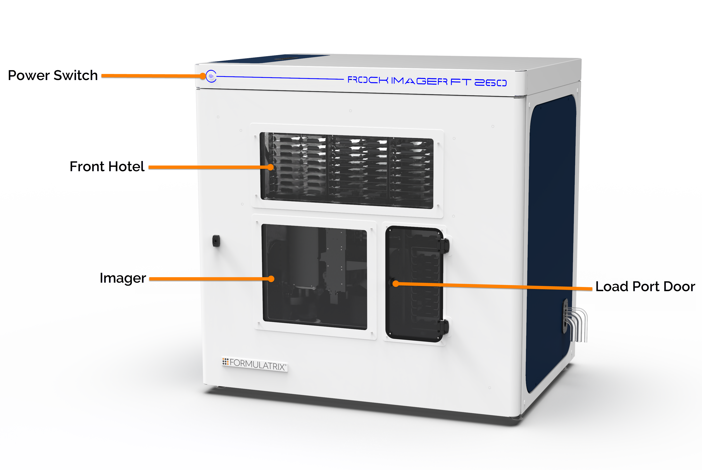

Hardware Overview¶
ROCK IMAGER FT is a benchtop imager designed to house up to 260 SBS plates, with each hotel interchangeable with LCP plates. This imager also features sorbothane mounts, which reduce vibration caused by moving parts.
{kind=link}
*ROCK IMAGER FT 260 External Components*

*ROCK IMAGER FT 260 Internal Components*
Warning
Do NOT open the main door and leave the internal components out in the open unless special instruction is given from FORMULATRIX support. Doing so could potentially void the warranty.
Power Switch
The Power Switch turns ROCK IMAGER FT ON and OFF. You should leave the imager powered ON during idle times to allow for automatic scheduled imaging and to maintain a constant temperature for any plates stored in the system’s hotels.
Front and Back Hotels
A hotel is composed of slots where each microplate is stored. The system is ergonomically designed to accommodate up to 260 SBS plate types, which are interchangeable with LCP plates. The front hotel, visible from the front part of the system, can accommodate up to 60 SBS-footprint plates. The back hotels can house up to 189 plates.
An individual stripe is installed on each slot in the back hotels which increases static friction, thus preventing the plates from shifting due to vibrations. In both the front and Load Port hotels, registers are present on every slot that serve a similar purpose.
Warning
Do NOT attempt to physically reach inside the ROCK IMAGER FT’s hotels except for the ones located in the Load Port.
Load Port Door
The clear acrylic door provides you with direct access to the plates stored in the Load Port hotels. A passive pneumatic hinge feature helps to keep the door from swinging freely when it’s opened. A gentle nudge will have the door closing itself slowly, thus preventing the door from slamming.
SBS and Linbro Hotels in Load Port
ROCK IMAGER FT provides you with one dedicated Linbro hotel in the Load Port and up to 10 slots for SBS-footprint plates. The Load Port is the only area in the ROCK IMAGER FT that you have direct access to.
Imager
ROCK IMAGER FT includes Visible lightpath as the default imaging mode, and comes with optional Ultraviolet (UV) and Single Light Path (SLP) imaging modes.
Temperature Control
ROCK IMAGER FT can monitor and regulate temperatures to within 1° C with the assistance of its air circulation system. The system’s temperature can be controlled from 4° C up to 30° C. An external industrial water chiller is used to cool the interior down to 4° C. Additionally, two heaters are utilized to regulate temperature up to 30° C.